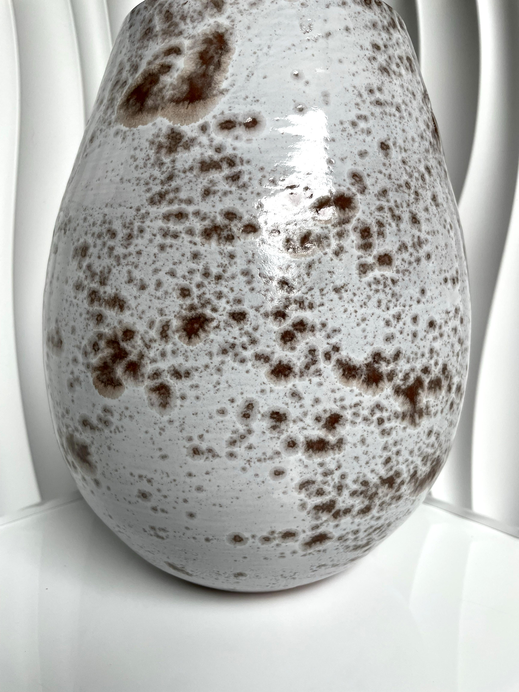
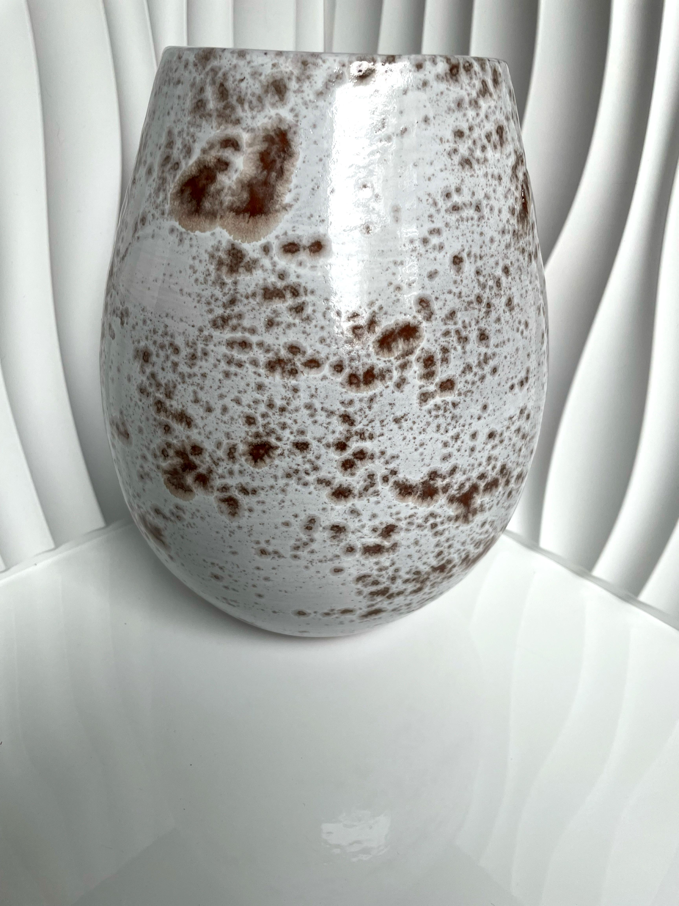
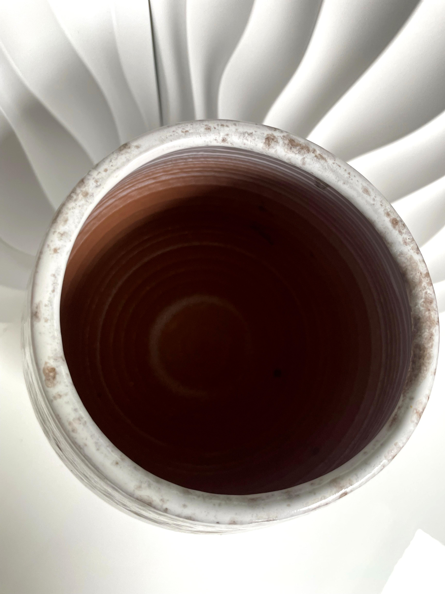
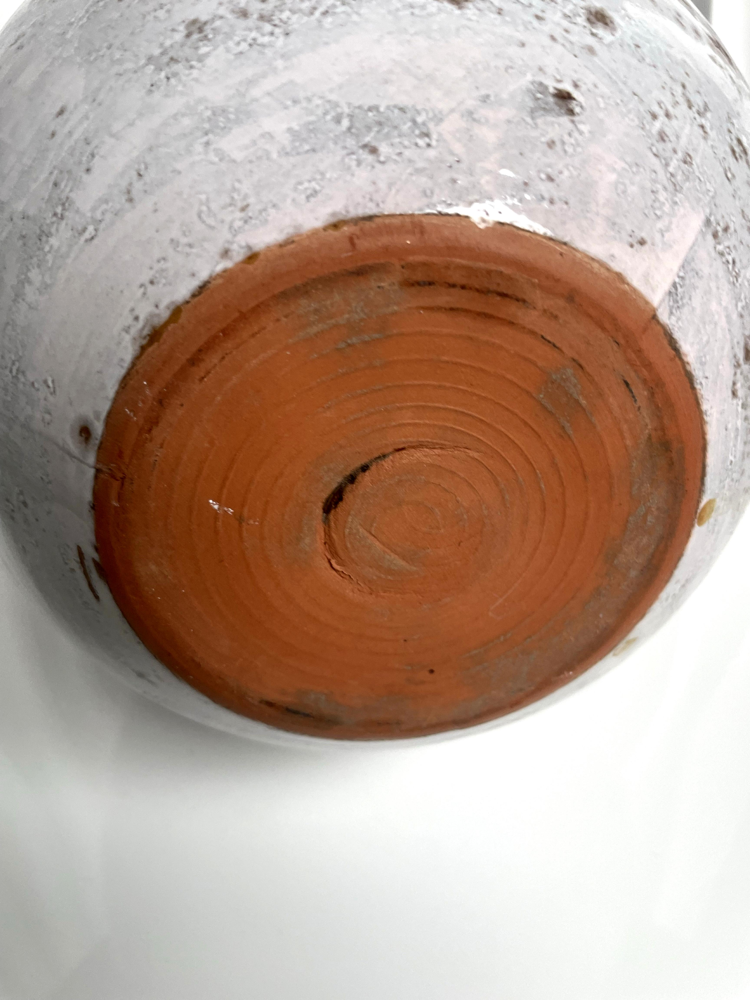

A traditional Japanese sake set featuring a bottle (tokkuri) and matching cups (ochoko). Handcrafted with elegant form and smooth glaze, this set embodies the refinement of Japanese ceramic art. Perfect for serving warm or cold sake and a great addition for collectors.
Condition: Excellent, no chips or cracks.
Royal Porzellan Vase
€40.00
This German Royal Porzellan vase is a mid-century treasure, featuring hand-applied glazing with modernist influences. The shape reflects refined craftsmanship, perfect for displaying flowers or as a standalone decorative object.
Height: 17 cm Width: 11 cm Condition: Excellent vintage condition.
Chinese Vase
€50.00
A refined Chinese porcelain vase with delicate hand-painted motifs inspired by classical themes. This vase captures the artistry and balance of traditional Chinese ceramics. Ideal as a centerpiece or collectible display piece.
Height: 28 cm Width: 14 cm Condition: Two small chips (see photos), otherwise excellent.
Speckled Porcelain Pottery




€85.00
A handmade speckled porcelain pottery piece showcasing natural textures and earthy tones. The surface glaze produces a unique speckled pattern, making it a charming addition to any collection of artisanal ceramics.
Height: 24 cm Width: 18 cm Condition: Excellent, no chips or cracks.